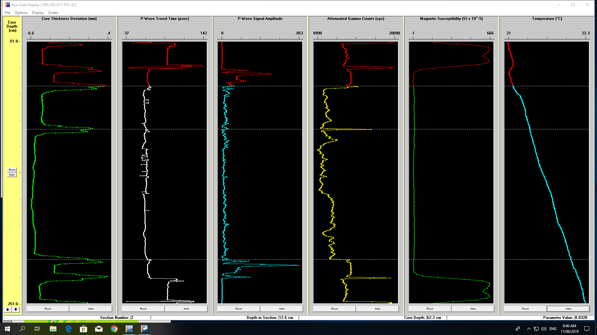

Chapter 2 Geotek MSCL
The Geotek MSCL situated at ORCA is an instrument for gathering data in an automated and quality-controlled way. The parameters that can be measured are
- P-wave velocity;
- Gamma density;
- Magnetic susceptibility using both loop and point sensors;
- Electrical resistivity;
- Colour linescan imaging including RGB data at sub-millimeter resolution
- Colour spectrophotometry

\(~\)
\(~\)
Measurements are typically made at a 5mm Resolution with the exception of the loop magnetic susceptibility on whole cores which is measured at a 20mm Resolution. Measurement times at these resolutions are
- Whole Core - 1 meter of core takes approximately 1 hour
- Split Core - 1 meter of core takes approximately 1.5 hours
- Line scan imaging - 1m of core takes approximately 20 mins, depending on the exposure time selected
The MSCL is able to analyse either whole or split core between 50 and 150mm in diameter, cut into sections up to 1.5 m long.
